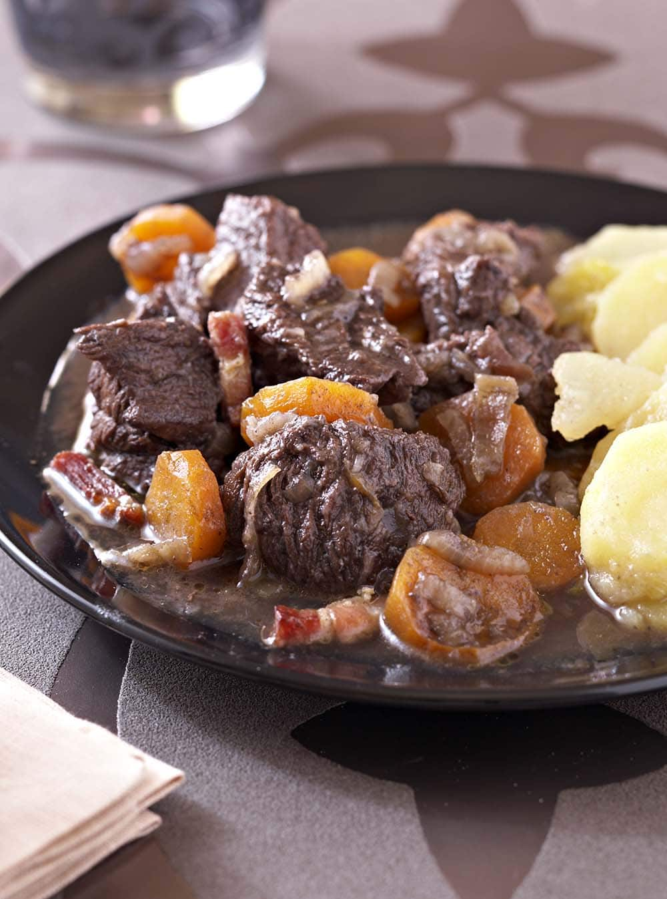

Boeuf Bourguignon

Description :
Le boeuf bourguignon est un très bon plat français.
A base de boeuf, on peut varier les accompagnements
Ingrédients :
- Boeuf pour bourguignon
- Beurre
- Carotte
- Farine
- Lardons
- Petits oignons
- Ail
- Champignon
- Sel
Etapes :
-
Tailler le boeuf en cubes de 3 à 4 cm de côte. Peler les oignons sans
les écorcher. Peler et couper les carottes en rondelles pas trop fines
(2mm au minimum). Peler l'ail et enlever le germe
-
Dans une grande cocotte faire fondre le beurre. Ajouter les oignons
entier et les lardons. Faire revennir en remuant constamment. Lorsqu'ils
sont dorés, les retirer avec un écumoire et réserver
- Dans la même cocotte, faire revenir encore 5 mn.
-
Lorsque la viande est bien dorée, saupoudrer de farine (60g) et laisser
roussir en remuant toujours.
-
Verser le bouilllon (que vous aurez préparé en faisant fondre les 2
cubes de bouillon de viande dans 50 cl d'eau bouillante). Bien gratter
les sucs. Remettre les lardons et les oignons dans la cocotte. Verser le
vin rouge. Saler, poivrer et ajouter le bouquet garni et les gousses
d'ail écrasées. Porter à ébullition. Couvrir et laisser mijoter
doucement pendant 3 heires (petits bouillons).
Recettes